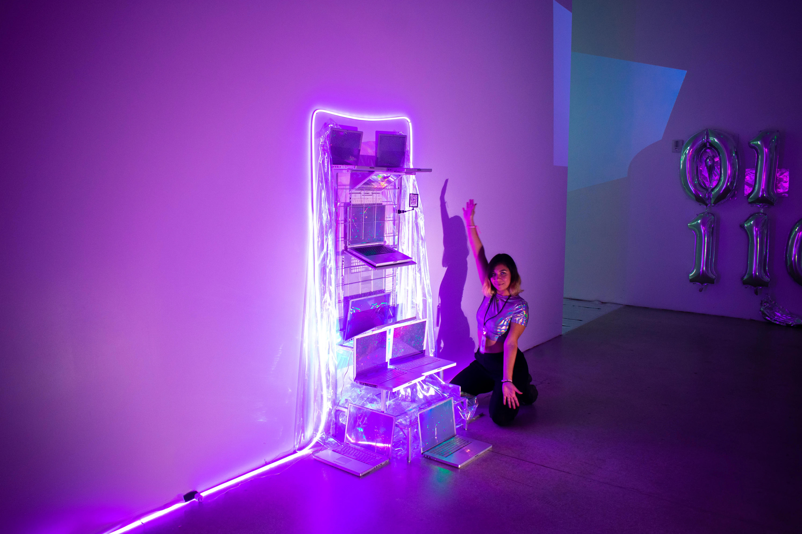

Chroma Art Film Festival
Superblue Miami
E-waste laptops, iridescent paper, metal
Miami, Florida, 2023
"Ode to Obsolescence" is a sculptural installation that transforms discarded laptops and shimmering iridescent materials into a landscape of technological relics. The piece evokes both nostalgia and critical reflection on the rapid cycle of innovation and abandonment inherent in consumer technology.
By bedazzling remnants of obsolescence, the installation invites viewers to reconsider the lifespan, memory, and environmental impact of the devices that shape our digital lives.